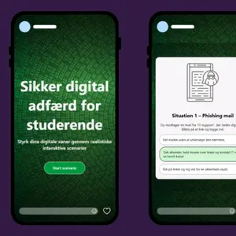
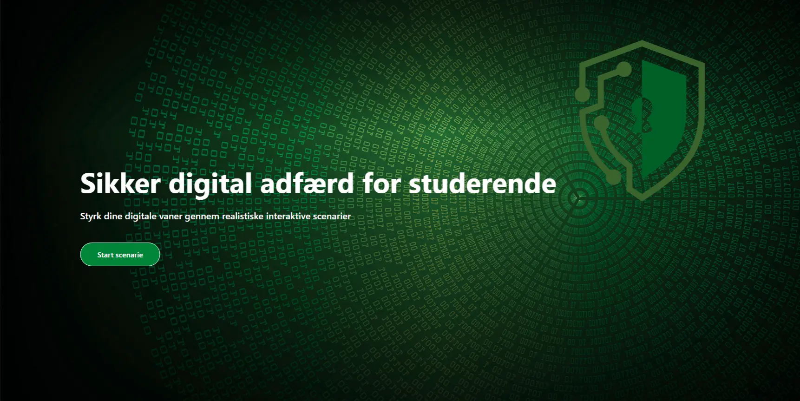
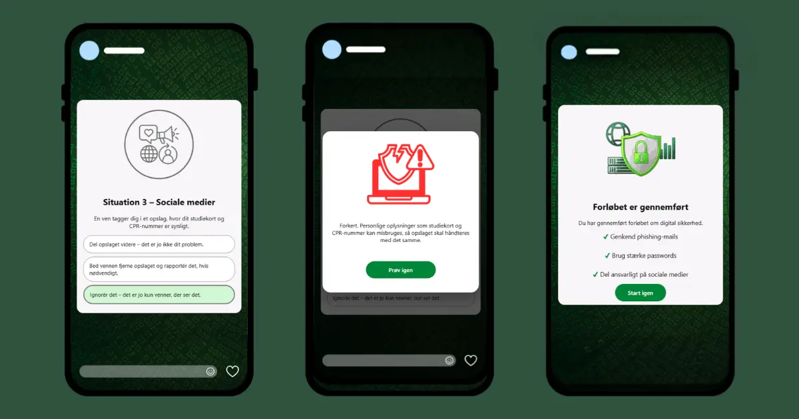

Portfolio
Interaktiv interface & Gamification

Opgaven var at udvikle en interaktiv, spilbaseret løsning der lærer studerende at genkende digitale trusler som phishing. Jeg researchede typiske angreb og byggede en række scenariekort, hvor brugeren skal vurdere en besked og træffe et valg.
Værktøjer: Figma, VS Code
Se mere

Fra trussel til scenarie
Jeg researchede først, hvordan phishing-angreb typisk ser ud, og hvilke situationer studerende oftest møder. Det blev til en række scenariekort, hvor brugeren skal vurdere en besked og træffe et valg.

Balancen mellem lærerigt og legende
Jeg testede flere versioner af interaktionen — især feedbacken ved forkerte valg — og justerede tonen, så forløbet føltes lærerigt uden at virke belærende.
Video & Motion

Et videoprojekt for en sundhedsfaglig virksomhed, hvor jeg arbejdede med visuel fortælling gennem levende billeder — fra optagelse til klip og farvekorrigering.
Værktøjer: Premiere Pro, After Effects
Branding & Identitet

Opgaven var at udvikle en visuel identitet for Maison Media, der skulle fremstå professionel og tillidsvækkende. Jeg startede med et moodboard og arbejdede igennem flere logo-iterationer.
Værktøjer: Illustrator, After Effects, Premiere Pro
Se mere
Fra moodboard til logo
Jeg startede med et moodboard for at definere det visuelle udtryk, og arbejdede derefter igennem flere logo-iterationer, før jeg landede på den endelige M-baserede mærkevare.
En identitet der holder på tværs af formater
Farvepalette og typografi blev valgt for at understøtte en seriøs, moderne tone, og identiteten blev testet på tværs af flere formater — herunder en brandvideo.
Digital illustration & Visuelt indhold

Forlaget ønskede et håndtegnet bogomslag til "Bisp. Gunner". Jeg startede med håndtegnede skitser og gik derefter videre til den digitale udførelse på en grafisk tablet.
Værktøjer: Photoshop, Illustrator
Se mere
Fra skitse til digital streg
Jeg startede med håndtegnede skitser for at udforske komposition, før jeg gik videre til den digitale udførelse på tablet — med fokus på at bevare stregens håndtegnede kvalitet.
At finde bogens visuelle stemning
Jeg eksperimenterede med farvepalette og detaljegrad for at ramme den stemning, forlaget efterspurgte, og finpudsede illustrationen gennem flere iterationer.